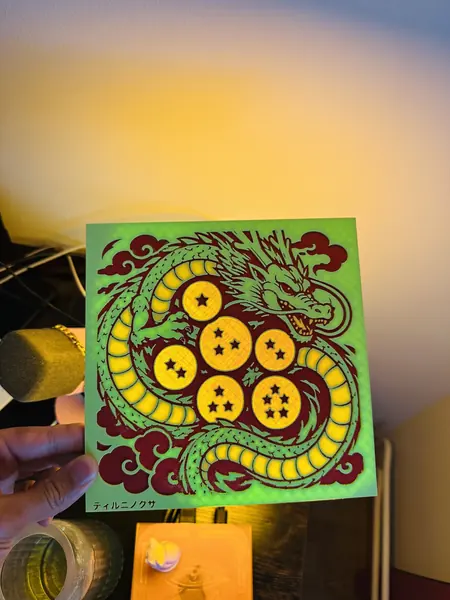
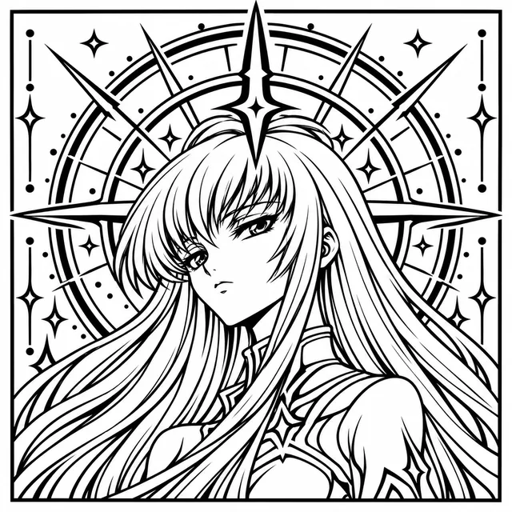
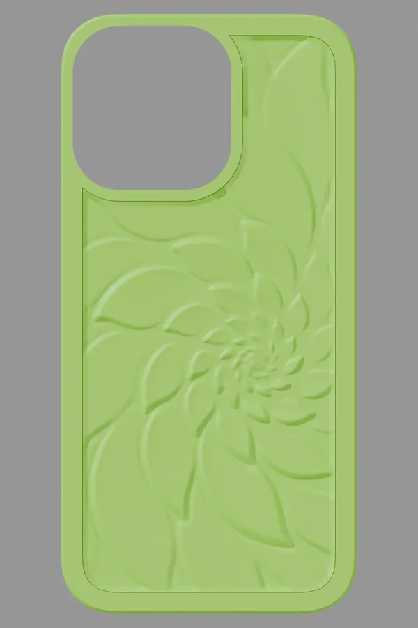

A friendly guide · no coding or CAD needed to start
Make your ideas real with an AI agent
This site is here to get you thinking about what you could create with your own agent. I've been designing 3D prints together with AI agents like Claude and Codex: I bring the idea, the agent does the CAD and the printer files, and we check every step together. Here is how that works, and the prompts to try it yourself.
Many designs here are fan art of characters I don't own. Not official, not for sale.

Why this site exists
Not a portfolio. An invitation.
This isn't a showcase of my work. The prints here are only examples. I've made many more that aren't on this site (lately a test frame for a small screen, a 20 cm ruler and the head of a little desk robot), and sharing all of it isn't the point. This is a one-off project, made to give you ideas.
If you've never used CAD, that's fine. CAD (computer-aided design) is the software people use to draw objects in 3D, and it takes time to learn. Working with an agent, you don't have to start there: you say what you want, the agent writes the code that builds the shape, and you judge what comes back.
Whether you see yourself as creative or not, if you have an idea, AI can help you make it. That's the beauty of AI, and it's where things are heading.
Beyond printing
It doesn't stop at 3D printing
Claude has also been teaching me electronics and robotics, and now we're designing 3D-printed parts for a small robot together. That will get its own site. The point for here: with a Claude Code subscription, the barrier to entry is lower than it's ever been. You learn by building, one tested step at a time.
I know frontier intelligence comes at a price right now, and not everyone can afford it. I believe that in the future this knowledge and intelligence will be available to everyone. That's the world I envision. It's part of why I work with local models, AI that runs free on your own computer. Maybe, through that work, I can help it happen.
How it works in one line
Picture, agent, print, check
You bring a picture
A drawing, a logo, a photo, or just an idea you describe in words.
An agent does the technical part
It turns the picture into a 3D shape, prepares the printer file and checks it, while you look at every step.
You print and test
Print a small test first, look closely, then fix and print again. That last step is where you learn the most.
Examples, not a portfolio
Four things we made

Zoro & Shenron plaques
Six engraved plaques; the Shenron one is printed and on the shelf. Two to four colours, one nozzle.
printed · four colours

Shelf plaques
25 flat two-colour plaques with a drawing carved into the face. Good first project: flat, no moving parts.
25/25 slice clean · not printed yet

Phone cases
Our own flexible TPU case, designed from Apple's published dimensions, with sculpted backs. Free files.
slice clean · not printed yet

Bookmarks
Thin two-colour bookmarks. Small, quick, cheap: the easiest way to start.
printed and published
Before you start
What you need
- An image or idea. Your own work, or something you are allowed to use.
- An AI agent. Claude Code or Codex need a paid plan; Gemini CLI has a free tier. See Resources.
- A printer, or someone else's. A makerspace, library or online print service can print a file you bring.
- Patience for one test print. Most first prints teach you something.